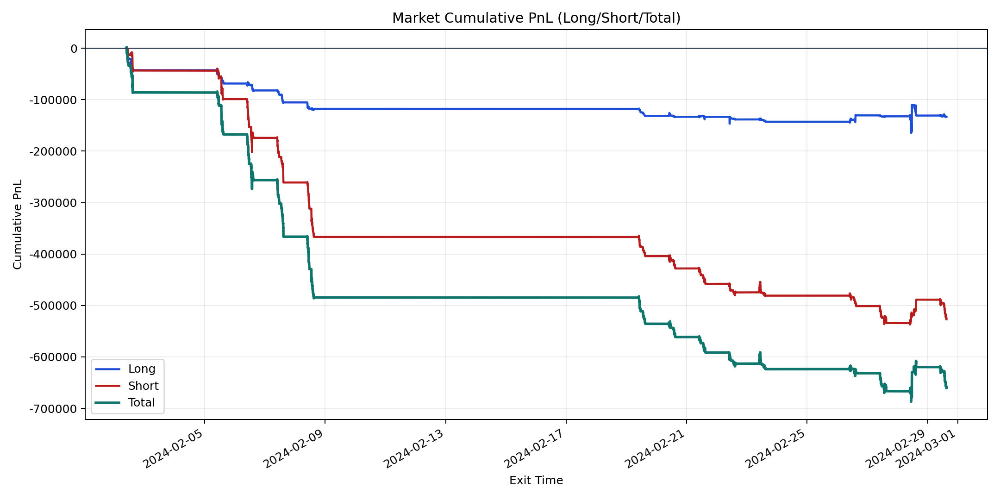
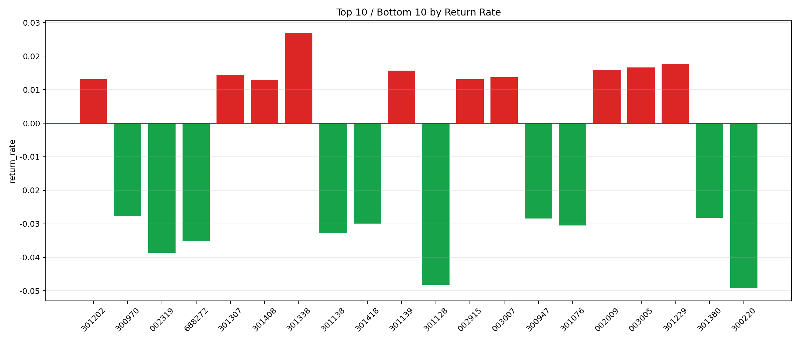

| repo_root | /home/haoranyou/data/output/alpha0.4_1w_5s_3ticks |
|---|---|
| period_months | 1 |
| period_label | 2024-02-02_to_2024-02-29 |
| start_time | 2024-02-02 09:38:41 |
| end_time | 2024-02-29 14:59:55 |
| n_trades | 67675 |
| n_symbols | 2132 |
| total_pnl | -660028.43845 |
| long_total_pnl | -133211.36980000007 |
| short_total_pnl | -526817.0686499999 |
| total_entry_notional | 625118261.0 |
| long_entry_notional | 183448198.0 |
| short_entry_notional | 441670063.0 |
| total_return_rate | -0.0010558457169274728 |
| long_return_rate | -0.0007261525120023259 |
| short_return_rate | -0.001192784190695759 |
| top_symbols_by_return | ["301338", "301229", "003005", "002009", "301139", "301307", "003007", "002915", "301202", "301408"] |
| bottom_symbols_by_return | ["300220", "301128", "002319", "688272", "301138", "301076", "301418", "300947", "301380", "300970"] |

